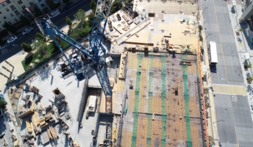

Field of Construction Management Business
건설관리사업부문
사업소개도로 및 공항 분야
국도의 지역간 균형발전과 국가 경쟁력 향상의 중요한 역할을 담당하는 주요 도로의 타당성 조사, 기본설계, 실시설계를 비롯하여 수많은 도로건설사업을 성공적으로 수행하고 있습니다. 친환경적 설계, 안전한 설계 등을 위해 노력하고 있으며, 지속적인 기술개발과 글로벌 인재양성으로 도로부문의 중추적인 역할을 담당하도록 노력하고 있습니다.
주요 프로젝트
[건설관리사업분야]
남양주 창현 3도시 신축공사 부지조성 및 진입도로 토목 감리용역(3개월)
[건설관리사업분야]
서빙고고가교 및 강변북로 연결로 개선공사외 1건 통합전면책임 감리용역
[건설관리사업분야]
롯데백화점 창원점 지하연결통로 토목감리용역
[건설관리사업분야]
수원역 임시보행통로 공사 토목감리용역 ‹㈜환경그룹 지분과업›
[건설관리사업분야]
[창원점]본관~영플라자 지하연결통로공사 토목 감리용역 변경(연장)계약
[건설관리사업분야]
수원역 임시보행통로 공사 토목 감리용역

[건설관리사업분야]
수도권고속철도 노반1-1, 1-2공구 전면책임감리 용역
[건설관리사업분야]
[창원점]신관(영플라자) 토목감리 용역계약 변경

[건설관리사업분야]
롯데 이천아울렛점 신축 토목감리 용역비
사업 실적
| 연도 | 과업명 | 서비스 형태 | 발주처 |
|---|---|---|---|
| 2014 | 남양주 창현 3도시 신축공사 부지조성 및 진입도로 토목 감리용역(3개월) | 건설 관리 | (주) 구리자동차운전학원 |
| 서빙고고가교 및 강변북로 연결로 개선공사외 1건 통합전면책임감리용역 | (주) 선진엔지니어링종합건축사사무소 | ||
| 수원역 임시보행통로 공사 토목감리용역 ‹㈜환경그룹 지분과업› | (주) 환경그룹 | ||
| 수원역 임시보행통로 공사 토목 감리용역 | 롯데건설(주)CM사업본부 | ||
| 수도권고속철도 노반1-1, 1-2공구 전맨책임감리 용역 | (주) 선진엔지니어링종합건축사사무소 | ||
| 2013 | [창원점]본관~영플라자 지하연결통로공사 토목 감리용역 변경(연장)계약 | 롯데쇼핑 (주) | |
| 롯데백화점 창원점 지하연결통로 토목감리용역 | 롯데CM사업본부 | ||
| 이천아울렛별관동토목감리용역 | 롯데쇼핑 (주) | ||
| 2012 | [창원점]신관(영플라자)토목감리용역계약변경 | 롯데쇼핑 (주) | |
| 롯데이천아울렛점신축토목감리용역비 | 롯데건설 (주) | ||
| (창원점)증축및리뉴얼공사토목감리용역변경계약 | 롯데수원역쇼핑타운 (주) | ||
| 롯데몰수원역신축공사토목감리용역 | 롯데쇼핑 (주) | ||
| 2011 | 롯데시티호텔제주신축공사토목감리용역 | (주)호텔롯데호텔사업부, (주)호텔롯데면세점사업부 |
|
| 2010 | 중동점지하철출입구연결통로공사토목감리 | (주) 롯데스퀘어 | |
| 2009 | 김해관광유통단지스포츠센타토목감리용역 | 롯데쇼핑 (주) | |
| 롯데마트창원중앙점신축공사토목감리용역 | 롯데쇼핑 (주) | ||
| 산본양문교회제2성전신축공사토목감리용역 | 건축사사무소 GMA | ||
| 롯데마트인천검단점신축공사토목감리용역 | 롯데쇼핑 (주) | ||
| 롯데마트정읍점신축공사토목감리용역 | 롯데쇼핑 (주) | ||
| 2008 | 본점주차타워신축공사토목감리용역 | 롯데쇼핑 (주) | |
| 롯데마트안산경기장점토목감리용역 | 롯데쇼핑 (주) | ||
| 롯데마트당진점신축공사토목감리용역 | 롯데쇼핑 (주) | ||
| 롯데마트대구점토목감리용역 | 롯데쇼핑 (주) | ||
| 2007 | 김해프리미엄아울렛신축공사토목감리용역 | 롯데쇼핑 (주) | |
| 2006 | 김해단지남측진입도로개설공사토목감리용역 | 롯데쇼핑 (주) |